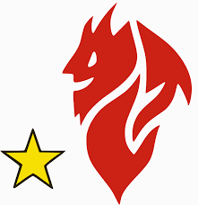
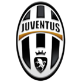
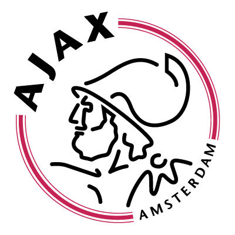

This is a web page about European football.

L'Associazione Calcio Milan S.p.A., nota anche
come A.C. Milan[4] o Milan (AFI: /ˈmilan/[5]), è una società
calcistica italiana fondata nel dicembre 1899, con sede nella
città di Milano. La squadra milita nella Serie A del campionato italiano
di calcio, dove ha giocato pressoché stabilmente: dalla sua introduzione
nella stagione 1929-1930, infatti, ha partecipato a 83 campionati di
Serie A a girone unico su 85. La carica di presidente del club è
ricoperta dall'imprenditore cinese Li Yonghong[6].

La Juventus Football Club (dal latino: iuventūs, «gioventù»), meglio nota
come Juventus (/juˈvɛntus/) e colloquialmente chiamata Juve (/ˈjuːve/), è
una società calcistica italiana per azioni con sede nella città di Torino.
Fondata nel 1897 da un gruppo di studenti liceali locali, e originariamente
costituita come un'associazione polisportiva,[1] è la seconda organizzazione
calcistica per anzianità tra quelle tuttora attive dopo il Genoa (1893),[2]
la più titolata e con maggiore tradizione del Paese oltreché una delle più
blasonate al mondo con un record di 63 trofei ufficiali vinti, tra cui il primato
di 33 titoli di campione d'Italia e 11 in competizioni UEFA.

L'Amsterdamsche Football Club Ajax, (Euronext: AJAX), meglio noto semplicemente com
Ajax, è una società calcistica olandese con sede nella città di Amsterdam. Milita
nella Eredivisie, la massima serie del campionato nazionale, e gioca le partite
casalinghe all'Amsterdam Arena.
È la squadra più titolata del Paese, avendo vinto 33 campionati, 18 Coppe, 8 Supercoppe
d'Olanda, nonché una tra le più vittoriose del mondo, potendo vantare 4 Coppe dei Campioni-Champions
League, 1 Coppa delle Coppe, 1 Coppa UEFA, 2 Supercoppe UEFA, 2 Coppe Intercontinentali.
È famosa per il suo florido vivaio.